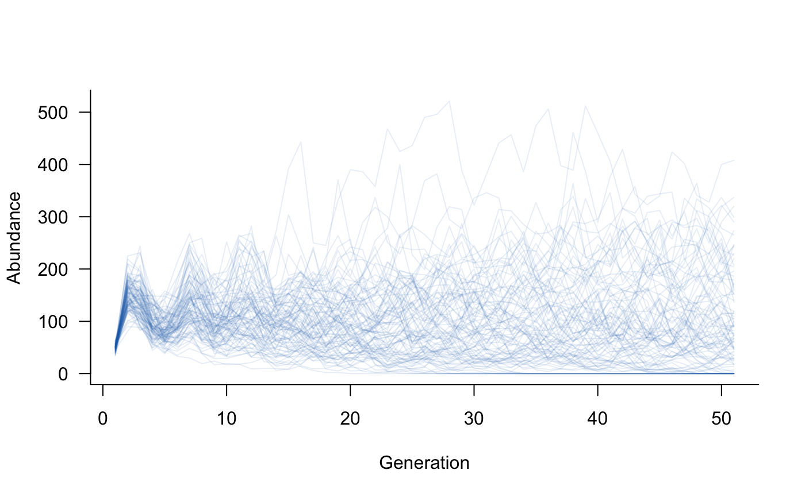
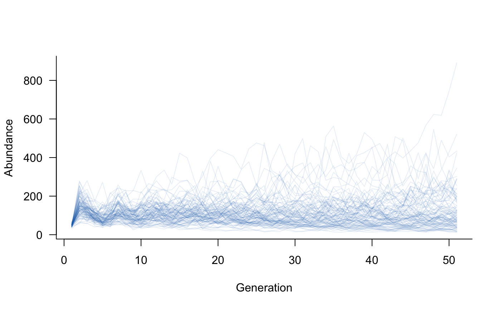
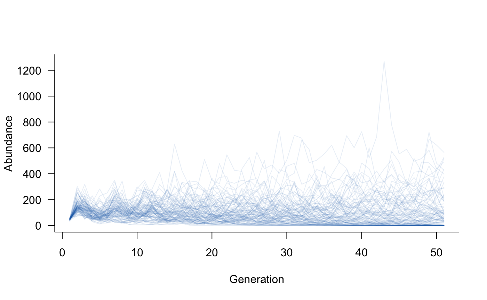

vignettes/including_processes.Rmd
including_processes.RmdThis is a broad term that could mean many things. aae.pop focuses on four main processes:
demographic stochasticity: random variation in the outcomes of individual processes (e.g. birth, death), resulting in variation in population abundances.
environmental stochasticity: random variation in external conditions, resulting in variation in the vital rates (i.e., the population matrix).
density dependence: variation in vital rates or population outcomes that depends on the abundance of the population. Density dependence can be negative (e.g., due to limited resources) or positive (e.g., Allee effects).
covariate effects: the influence of covariates on the population matrix. In aae.pop, covariate effects are included primarily to allow the population matrix to change through time in response to external factors (e.g., weather, habitat availability).
Two additional processes, dispersal and interspecific interactions, are covered in the Metapopulations and Multiple species vignettes.
masksThe processes above are unlikely to have consistent effects across all vital rates or all classes in a population. To deal with this, aae.pop is built around a concept of masks. Masks are used to select specific elements of the population matrix, and only these elements are altered by a given process.
Masks are paired with functions when defining all of the above processes. Masks tell R which cells to target, functions tell R what to do to these cells.
Several helper functions are included to define common masks. These include the reproduction, survival, and transition regions of the matrix discussed in the getting started vignette, as well as masks to select an entire population matrix (all_cells) or abundance vector (all_classes).
The masks defined in aae.pop return a TRUE/FALSE matrix or vector that selects the required cells. Masks are defined in this way because aae.pop flattens the population matrix in all internal calculations, which breaks cell-based subsetting (i.e., the [i, j] R notation will not work). It is possible (but not advised) to work around this. The discussion below covers how to work around masks and why this might not be a good idea.
Let’s start with the basic model used in the getting started vignette. This was a Leslie matrix with five age classes, with individuals reproducing from ages 3-5.
popmat <- rbind( c(0, 0, 2, 4, 7), # reproduction from 3-5 year olds c(0.25, 0, 0, 0, 0), # survival from age 1 to 2 c(0, 0.45, 0, 0, 0), # survival from age 2 to 3 c(0, 0, 0.70, 0, 0), # survival from age 3 to 4 c(0, 0, 0, 0.85, 0) # survival from age 4 to 5 )
This is sufficient to start simulating population dynamics, using the dynamics and simulate functions. However, adding additional processes requires a few more steps first.
Random variation in individual outcomes is a key feature of most population models. This variation is most important (and influential) when populations are small, so that a few small events (e.g., several individuals failing to reproduce) can have a big effect on population outcomes.
Demographic stochasticity will be defined here with a single mask and its corresponding function. The simplest form of demographic stochasticity in this case is Poisson variation around the expected number of individuals in the next generation. This can be coded up as:
demostoch_mask <- all_classes(popmat) # affects all classes demostoch_fn <- function(x) { rpois(length(x), lambda = x) }
Here, the mask selects all classes in the population vector and the function takes this vector x and returns random Poisson variates with mean equal to x.
The mask/function pair can be combined into a single object with the demographic_stochasticity function.
demostoch <- demographic_stochasticity( masks = demostoch_mask, funs = demostoch_fn )
The resulting demostoch object can be passed directly to dynamics, along with the population matrix. In turn, this creates a dynamics object that can be used in simulate.
# create population dynamics object popdyn <- dynamics(popmat, demostoch) # simulate population dynamics sims <- simulate(popdyn, nsim = 100) # plot the population trajectories plot(sims, xlab = "Generation", ylab = "Abundance")

Environmental stochasticity will be defined here with two masks and their corresponding functions. The simplest form of variation in reproduction is Poisson variation around the expected number of new individuals. This can be coded up as:
reproduction_mask <- reproduction(popmat, dims = 3:5) # only ages 3-5 reproduce reproduction_fn <- function(x) { rpois(length(x), lambda = x) }
Here, the mask selects the reproductive output of age classes 3 to 5 in the population matrix and the function takes this vector x and returns random Poisson variates with mean equal to x.
The second mask/function pair will add variation in survival outcomes. In this case, a simple form of variation is to add or subtract some small value from the survival probabilities. This can be coded up as:
transition_mask <- transition(popmat) # all classes this time transition_fn <- function(x) { # add a random deviation to x deviation <- runif(length(x), min = -0.1, max = 0.1) x <- x + deviation # make sure the result isn't negative or greater than 1 x[x < 0] <- 0 x[x > 1] <- 1 # return the value x }
Here, the mask selects all elements on the sub-diagonal of the population matrix, and the function takes some vector x and returns a new value with a deviation between -0.1 and 0.1. There is one extra check in the function to make sure that the new probabilities are still probabilities (i.e., still between 0 and 1).
These two mask/function pairs can be combined into a single object with the environmental_stochasticity function.
envstoch <- environmental_stochasticity( masks = list(reproduction_mask, transition_mask), funs = list(reproduction_fn, transition_fn) )
The resulting envstoch object can be passed directly to dynamics, along with the population matrix. In turn, this creates a dynamics object that can be used in simulate.
# create population dynamics object popdyn <- dynamics(popmat, envstoch) # simulate population dynamics sims <- simulate(popdyn, nsim = 100) # plot the population trajectories plot(sims, xlab = "Generation", ylab = "Abundance")

It is easy to include both environmental and demographic stochasticity in the same model. The dynamics call simply needs both envstoch and demostoch objects:
# create population dynamics object popdyn <- dynamics(popmat, envstoch, demostoch) # simulate population dynamics sims <- simulate(popdyn, nsim = 100) # plot the population trajectories plot(sims, xlab = "Generation", ylab = "Abundance")
